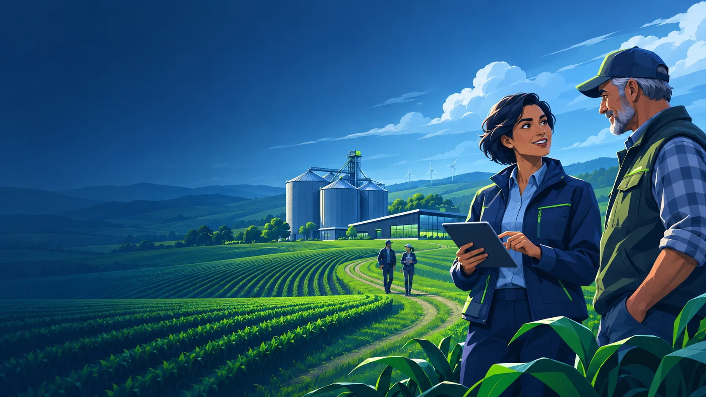
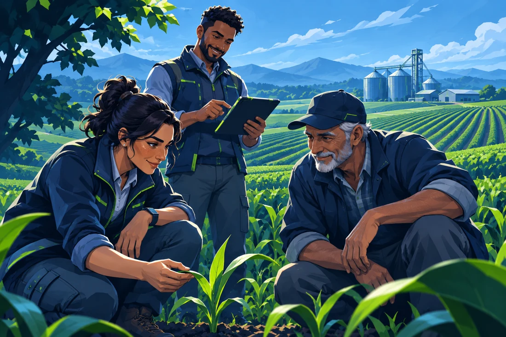

By design.
Start with clarity.
↗Color, type, space, and the principles that make every experience feel like CoBank.
Explore foundations
THE COBANK DESIGN SYSTEM
One shared language. A world of possibility.
Design and build experiences that move our
people, our products, and our purpose forward.
One system.
Collective impact.
THE BUILDING BLOCKS OF BETTER
The foundations to move with confidence.
The flexibility to create what comes next.
Color, type, space, and the principles that make every experience feel like CoBank.
Explore foundationsReusable components and considered patterns. Familiar to our users. Flexible for your ideas.
Explore componentsPractical guidance that connects design, development, and content from the first conversation.
Explore workflowsFROM SHARED LANGUAGE TO SHARED PROGRESS
One system. Different ways in. Bring your expertise; build on what we share.
Find the right pattern, compose with shared components, and bring the details into focus.
THE DETAILS MAKE THE DIFFERENCE
A closer look at the ingredients
behind a consistent experience.
A contemporary palette with agricultural roots. Select a color to copy its value.
Try a few building blocks. This example stays in your browser.
Illustrative controls · Explore the Agrikit reference for library contracts.
THE NEXT GENERATION OF OUR WORKFLOW
Bring the system into your workflow with Agrikit’s component knowledge, theme tokens, and MCP tools.

CONNECTED BY SOMETHING BIGGER
Behind every experience is a person. Behind our work is a cooperative mission. We design for both—with care, with intention, and with the future in view.
Our cooperative purposeYOUR NEXT MOVE
The right resource, right when you need it.
THE FUTURE IS A SHARED PROJECT